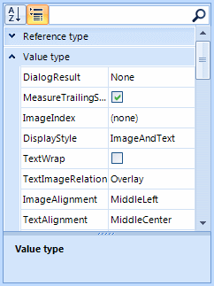

Custom Grouping
Custom grouping is a flexible mechanism for creating RadPropertyGrid groups by using custom logic. It has a higher
priority than the applied GroupDescriptors. Grouping is applied if user grouping is enabled through the
RadPropertyGrid.EnableGrouping or PropertyGridElement.EnableGrouping properties.
By default, grouping is enabled.
You can use the ItemFormatting event to format the group text of the created custom groups.
Using the CustomGrouping event
The CustomGrouping event is fired if custom grouping is enabled through the
RadPropertyGrid.EnableCustomGrouping__or __PropertyGridElement.EnableCustomGrouping
properties. By default, custom grouping is disabled.
PropertyGridTable – the table while holds the items that will be grouped
Item – the item which group is defined
GroupKey – identifier of the group
Handled – defines whether the item is processed by the custom algorithm or by the applied group descriptors.
The following example demonstrates how to handle the CustomGrouping event to group the RadPropertyGrid items by the type of the property:
[C#] Custom grouping
public PropertyGridCustomGrouping()
{
InitializeComponent();
radPropertyGrid1.SelectedObject = new RadButton();
radPropertyGrid1.ToolbarVisible = true;
this.radPropertyGrid1.EnableCustomGrouping = true;
this.radPropertyGrid1.CustomGrouping += new PropertyGridCustomGroupingEventHandler(radPropertyGrid1_CustomGrouping);
radPropertyGrid1.ItemFormatting += new PropertyGridItemFormattingEventHandler(radPropertyGrid1_ItemFormatting);
GroupDescriptor descriptor = new GroupDescriptor("PropertyType");
this.radPropertyGrid1.GroupDescriptors.Add(descriptor);
}
void radPropertyGrid1_ItemFormatting(object sender, PropertyGridItemFormattingEventArgs e)
{
PropertyGridGroupItem groupItem = e.Item as PropertyGridGroupItem;
if (groupItem != null)
{
e.Item.Label = groupItem.Group.Key.ToString();
}
}
private void radPropertyGrid1_CustomGrouping(object sender, PropertyGridCustomGroupingEventArgs e)
{
Type propertyType = e.Item.PropertyType;
if (propertyType.IsClass)
{
e.GroupKey = "Reference type";
}
else
{
e.GroupKey = "Value type";
}
}
[VB.NET] Custom grouping
Public Sub New()
InitializeComponent()
RadPropertyGrid1.SelectedObject = New RadButton()
RadPropertyGrid1.ToolbarVisible = True
Me.RadPropertyGrid1.EnableCustomGrouping = True
Dim descriptor As New GroupDescriptor("PropertyType")
Me.RadPropertyGrid1.GroupDescriptors.Add(descriptor)
End Sub
Private Sub RadPropertyGrid1_CustomGrouping(ByVal sender As Object, ByVal e As Telerik.WinControls.UI.PropertyGridCustomGroupingEventArgs) Handles RadPropertyGrid1.CustomGrouping
Dim propertyType As Type = e.Item.PropertyType
If propertyType.IsClass Then
e.GroupKey = "Reference type"
Else
e.GroupKey = "Value type"
End If
End Sub
Private Sub RadPropertyGrid1_ItemFormatting(ByVal sender As Object, ByVal e As Telerik.WinControls.UI.PropertyGridItemFormattingEventArgs) Handles RadPropertyGrid1.ItemFormatting
Dim groupItem As PropertyGridGroupItem = TryCast(e.Item, PropertyGridGroupItem)
If groupItem IsNot Nothing Then
e.Item.Label = groupItem.Group.Key.ToString()
End If
End Sub
